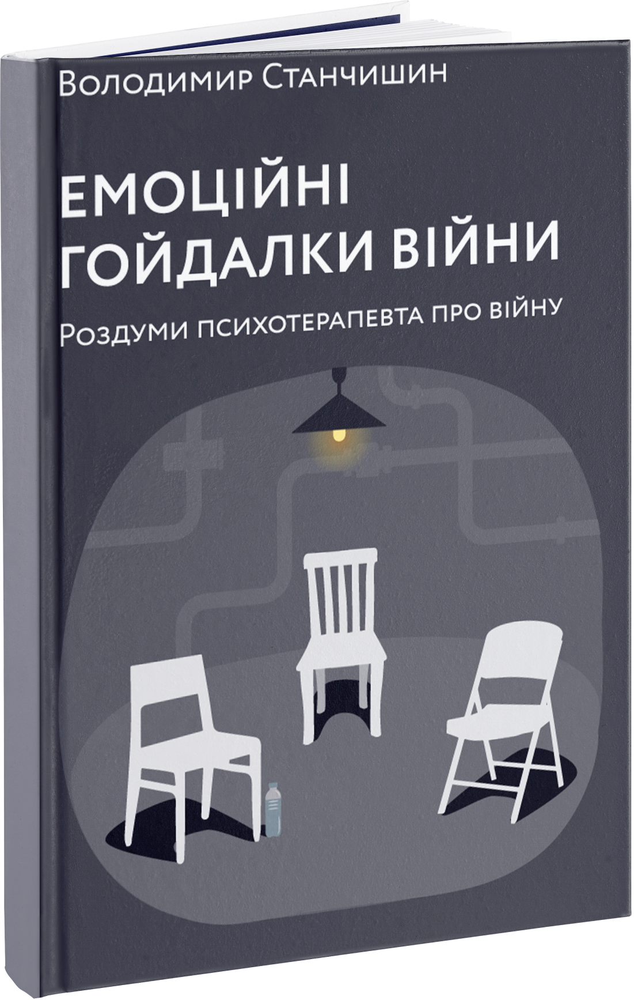
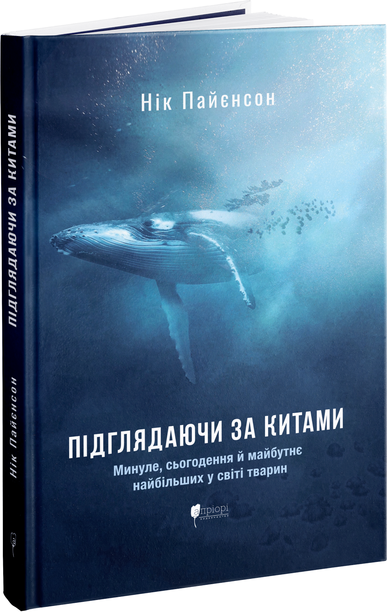
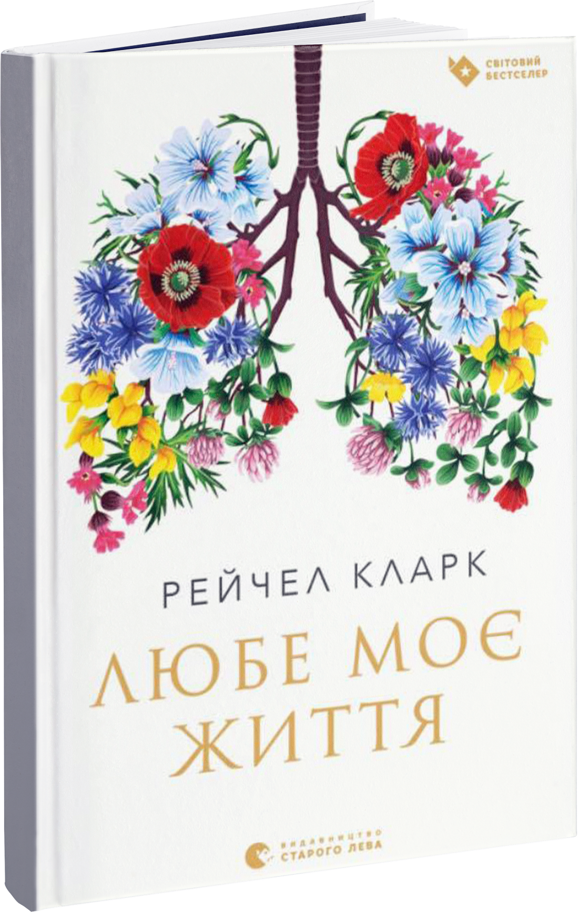
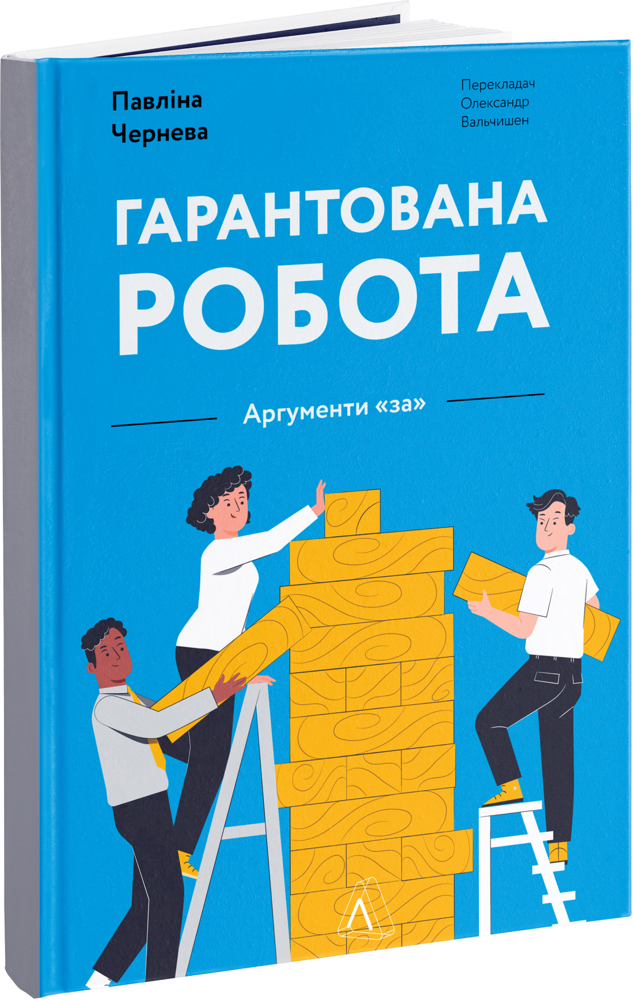

10 нових книг вересня
Художня література
Ґим-Сук Джендрі-Кім «Паросток»
«ВИДАВНИЦТВО»
Переклад з кор. О. Щегель
У 2019 році «Паросток» було визнано «Коміксом року» за версією The New York Times, найкращою графічною
новелою, на думку експертів The Guardian, також твір отримав престижну нагороду The Cartoonist Studio
Prize. Візуально довершене антивоєнне висловлювання південнокорейської письменниці Ґим-Сук Джендрі-Кім
сколихнуло читачів по всьому світу, адже порушило низку дуже важливих питань. Беззахисність дитини перед
обставинами, у випадку героїні «Паростку» – перед бідністю, стереотипним ставленням родини до призначення
дівчинки/жінки, жах війни, коли для опису жорстокість не можна знайти слів, прагнення любові та здатність
зберігати людяність в умовах, що, здавалося б, повністю нівечать особистість – про все це в
неперевершеній художній манері, використовуючи лаконічну чорну туш, розповідає Ґим-Сук Джендрі-Кім. 1937
року розпочалася Японсько-китайська війна, що потім стала частиною Другої світової.
На території Кореї японська імперська армія чинила масові вбивства й інші злочини проти мирного
населення. Так, у чотирнадцять років Ок-Сон Лі викрали прямо з вулиці, посадили в товарний вагон і
переправили далеко від дому для роботи «жінкою для втіх». Переживши сексуальне рабство, хвороби, втрату
зв'язку з родиною героїня графічного роману, мов той паросток, що тягнеться вгору, попри всі перешкоди,
вижила, створила родину і знайшла в собі сили вже у поважному віці боротись за визнання воєнних злочинів
Японії. Комікс Ґим-Сук Джендрі-Кім – історія, що торкається серця до сліз.
Сільвія Морено-Ґарсія «Мексиканська готика»
«КЛУБ СІМЕЙНОГО ДОЗВІЛЛЯ»
Переклад з англ. Б. Превіра
1950-ті роки, Мехіко. Заможна й гарна Ноемі Табоада змінює сукні так само часто, як кавалерів на світських раутах і вечірках. Але незабаром їй доведеться покинути галасливе місто й вирушити у подорож до провінції, щоб з’ясувати обставини дивного стану своєї кузини Каталіни. Вийшовши заміж на представника колись заможної родини британців – власників родовищ срібла, молода жінка переїхала у їхній Дім-на-Горі. Каталіна не знала, що місцеві мешканці називають його проклятим. Але незабаром занедужала, бо Дім почав висмоктувати з неї сили – труїти. У відчаї Каталіна написала листа своїм родичам, в якому попросила Ноемі врятувати її. Звісно, кузині відразу приписали схильність до драми, але візит у маєток загадкових Дойлів все ж організували. Життєрадісна Ноемі потрапить у похмуру атмосферу Дому-на-Горі, де панують непорушні правила, а ще страх і таємниці. Розгадка найголовнішої з них ледь не коштуватиме Ноемі та Каталіні життя… Сільвія Морено-Ґарсія, популярна мексикано-канадська письменниця, продовжує літературні традиції Дафни дю Мор’є та Ширлі Джексон. Її динамічна, захоплива, сповнена чуттєвості й інтриги оповідь має кінематографічно чітко прописаних персонажів. Слова прозаїкині швидко оживають в уяві та дарують рівно стільки задоволення, скільки можна отримати від готичного горору.

Курт Воннеґут «Божої вам ласки, містере Роузвотере»
«ВАВИЛОНСЬКА БІБЛІОТЕКА»
Переклад з англ. Т. Некряч
Критика американського суспільства була однією з центральних тем творчості Курта Воннеґута. Шалений
капіталізм, що дозволяв одним накопичувати непомірно великі статки, а інших залишав злидарями, і став
об’єктом для сарказму письменника в романі «Божої вам ласки, містере Роузвотере». Книжка вийшла 1965 року
і стала багато в чому знаковою для автора. Річ у тім, що романи Воннеґута створюють окремий всесвіт, в
якому, наприклад, одні й ті самі персонажі подорожують різними творами, а теми розвиваються від тексту до
тексту. Наприклад, у «Божої вам ласки, містере Роузвотере» вперше з’являється альтер его автора –
письменник Кілґор Траут, якого можна зустріти в багатьох книжках Воннеґута.
Він же формулює ключове питання роману: як любити непотрібних суспільству людей… На поверхні книжки –
духовна криза мультимільйонера Еліота Роузвотер. «Життя і без того жорстоке, то навіщо примушувати людей
ще й страждати через брак грошей?» – справедливо зауважує він і починає роздавати фінансову допомогу від
родинного фонду мешканцям маленького містечка в штаті Індіана – невдахам різного масштабу. Водночас один
прудкий юрист вирішує розпочати визнання Еліота божевільним, щоб урвати й собі шматок багатства,
допомагаючи вступити у право керування статками іншій гілці сімейства Роузвотерів. Якщо ж дивитись на
роман глибше, то він – про американську мрію, яка знищила сама себе. Принаймні так вважав Воннеґут, а
погоджуватись з ним чи ні – особиста справа читача.
Джон Ірвінг «Правила будинку сидру»
«ФАБУЛА»
Переклад з англ. О. Тільної
У 2022 році роман «Правила будинку сидру» став одним із сотні творів, вилучених з публічних і шкільних
бібліотек Техасу. Чому «авторитарний відкат», помічений та озвучений Ірвінгом у сучасних США торкнувся
твору, написаного майже чотири десятиріччя тому? Розповідаємо. «Правила будинку сидру» – масштабний за
задумом і реалізацією текст. Роман, що починається з 1920-х років, охоплює й період після Другої світової
війни. У містечку Свята Хмара, що в штаті Мен, є притулок для сиріт. Його очолює прогресивний лікар
Вілбур Модрина, який вважає, що жінка має право вирішувати, як їй чинити зі своїм тілом, а тому приймає у
притулку роди у тих, хто потім залишає немовлят, чи робить аборти. Автор докладно прописує життєву та
професійну філософію Модрини. Погляди цього персонажа, як і лікарська лінія в книжці взагалі, виявились
несумісними зі скасуванням Верховним судом США конституційного права жінок на аборт, що сколихнуло
американське суспільство влітку 2022 року.
Та, крім цього, роман оповідає історію життя Гомера Криниці, вихованця сиротинця у Святій Хмарі.
Ще підлітком він понад усе мріяв приносити користь іншим людям. Тому старанно вчився у лікаря Модрини,
став чудовим акушером, вступив у полеміку зі своїм вихователем щодо припустимості абортів, а потім
опинився в іншому місті, де знайшов кохання та найкращого друга. Звісно, це дуже спрощений переказ змісту
роману Ірвінга, що містить чимало персонажів, їхніх внутрішніх діалогів та цікавих сюжетних рішень. А
тому краще самостійно познайомитись із «Правилами будинку сидру», бо з просто хорошої книжки відомого
автора цей роман перетворився ще й на протестне читво.
Нон фікшин
Володимир Станчишин «Емоційні гойдалки війни»
«ВІХОЛА»
«Наша психіка має унікальні здатності до адаптації та відновлення – скільки б ми не пройшли випробувань, попереду можуть бути нові. – зазначає український психолог-психотерапевт Володимир Станчишин. – І все ж ми можемо бути до них готовими». Або не готовими, а ще розгубленими, тривожними, пригніченими… Кожен з нас може відчувати будь-які емоції під час аж надто стресової ситуації. І це нормально. Тож книжка Станчишина передовсім для і про цивільне населення, людей, «які рятуються від війни, про всіх тих, хто намагається осягнути для себе війну й адаптуватися та переживає надзвичайно складні емоції». Щодо останніх, то автор обрав та описав тривогу як механізм, «який мусить зʼявлятися, щоб ми просто могли вижити», почуття провини, що є інструментом людського внутрішнього критика, злість – «сигнал ворогу про нашу рішучість у відстоюванні власних меж», ненависть до своїх «спричинену нашою безпорадністю, неможливістю вбити путіна», апатію як ознаку втоми мозку, смуток через втрату близької людини, що є досвідом для надання допомоги іншим, самотність, яка розкриває «можливості для розвитку, відновлення чи побудови нових стосунків», радість – недоречну під час війни, як здається нині багатьом з нас, але таку необхідну. Корисна, мудра, своєчасна книжка, що вчить «жити з тим, що ми живі».
Нік Пайєнсон «Підглядаючи за китами»
«АПРІОРІ»
Переклад з англ. І. Головачової
Дивовижна подорож у світ надзвичайних істот. Книжка Ніка Пайенсона – нон-фікшн, у якому є величезна любов до предмета дослідження – китів, безліч цікавої інформації про минуле нашої планети й дуже симпатичне авторське «я». Отже, морський біолог, палеонтолог, зберігач колекції скам’янілостей морських ссавців Смітсонівського інституту у Вашингтоні, автор статей у The New York Times, The Washington Post, National Geographic, Los Angeles Times у «Підглядаючи за китами» описує свої пригоди – від Антарктиди до пустель у Чилі, від тропічних берегів Панами до вод Ісландії та Аляски. Усе це заради того, щоб з’ясувати минуле, сьогодення і майбутнє нині найбільших тварин на Землі. Талановитий оповідач, Пайєнсон наповнює розповідь як науковими даними, так і власними емоціями, завдяки чому книжка сприймається із щирим захватом. Починає її автор з подорожі у дуже далеке минуле, коли кити ще крокували сушею, далі розповідає про те, як вони стали найбільшими відомими людині істотами й чого потребують для підтримки життєдіяльності. Наприкінці Пайєнсон міркує про майбутнє, яке не можливе без усвідомлення нашої відповідальності за життя тварин. Тож приготуйтесь дізнатись, що ранні кити, можливо, мали хутро й жили у лісах, їхній перехід із суші в море тривав 10 мільйонів років, що за аналізом ДНК найближчими родичами китів є гіпопотами, у сучасних китів є пупок, а представники одного з видів можуть пірнати на глибину майже 3000 метрів й при цьому затримувати дихання на 137 хвилин.
Рейчел Кларк «Любе моє життя»
«ВИДАВНИЦТВО СТАРОГО ЛЕВА»
Переклад з англ. А. Мизака
Рейчел Кларк росла в родині медиків, але у школі вирішила, що хоче стати письменницею. Здобувши гуманітарну освіту в Оксфордському університеті, вона присвятила себе журналістиці. Але майже у тридцять років Кларк перекваліфікувалась. Ставши молодшою лікаркою, попрацювавши у приймальному відділенні, вона обрала для себе паліативну медицину, бо «хотіла зберегти в собі людяність та боялася втратити внутрішню потребу піклуватись долею інших». Власне, мрія про письменництво тез справдилась, адже книжки Рейчел Кларк про лікарські будні стали дуже популярними у Великій Британії. До того ж «Любе моє життя» 2020 року увійшла до короткого списку престижної літературної премії Costa Book Awards. Книжка подає враження авторки від навчання та перших років практики, розповідає про її прагнення бути дотичною до медицини, в центрі уваги якої є не хвороба, а людина. «Сувора дійсність полягає в тому, що смерть, як і процес народження, подекуди буває жахливо виснажливою подією», – констатує Кларк. Тому вона обрала своєю роботою допомогу людям з кінцевими стадіями хвороб у госпісі, щоб дати їм головне – можливість гідно і в комфорті піти з цього світу. Історії про дуже різних пацієнтів, їхніх рідних та, звісно, саму Кларк і є основою книжки. Попри сумну й не надто обговорювану тему, особливо в українському суспільстві, «Любе моє життя» сповнена непорушного переконання в тому, що «ми живемо у непередбачуваному світі, де щохвилини з нами може трапитись будь-що, але він, попри все, повний краси та доброти».
Лоїс Френкел «Чемні дівчата не сидять у просторих кабінетах»
#КНИГОЛАВ
Переклад з англ. Ю. Кузьменко
Лоїс Френкел – знакова для США особистість. Її називають піонеркою у сфері бізнес-коучингу, однією з
найбільш авторитетних бізнес-тренерок і спікерок. Ліцензована психотерапевтка зі ступенем докторки
психології, Френкел написала низку бестселерів, присвячених її найулюбленішій темі – кар’єрним здобуткам
жінок. В оригіналі книжка «Чемні дівчата не сидять у просторих кабінетах» вийшла 2004 року.
Її завдання – застерегти жінок від несвідомих помилок, що заважають їхньому професійному розвитку. Утім,
як зазначає авторка у передмові, ця книжка не для всіх. Мовляв, читати її варто впевненим, активним
панянкам, що сміливо конкурують з колегами та вміють «схиляти робочі стосунки собі на користь». Якщо ви з
таких, Лоїс Френкел запрошує розглянути «133 типові помилки, яких жінки припускаються на роботі внаслідок
звичок, набутих у процесі соціалізації». Серед них, наприклад, бажання подобатись іншим людям,
перфекціонізм, применшення вагомості своєї роботи або посади, сюсюкання чи привселюдне чепуріння. Френкел
пише легко, з гумором, а головне – послуговуючись власним багаторічним професійним досвідом. Звісно, не
всі поради авторки сприймаються як обов'язкові до виконання, але до більшості з них точно варто
дослухатись.
Сесілія Канг, Шіра Френкель «Огидна правда. Шокуюче обличчя Meta-Facebook»
VIVAT
Переклад з англ. В. Галичиної
«Платформу збудовано на фундаментальному і, мабуть, вічній суперечності – сприяти прогресу суспільства, зближуючи людей, і водночас заробляти на цьому. – пишуть авторки книжки. – Це дилема Facebook і його огидна правда». Сесілія Канг, Шіра Френкель, імениті журналістки The New York Times, провели масштабне розслідування, що охопило «п’ятирічний проміжок – від одних виборів у США до наступних, – протягом якого виявилися слабкі місця компанії як потужної всесвітньої платформи та її неспроможність захистити користувачів». Їхня книжка є як історією Facebook, так і потужним викриттям авторитарного стилю керування Марка Цукерберга та Шеріл Сендберґ. Використання соціальної мережі командою Дональда Трампа і небажання бачити у заявах одіозного кандидата розпалювання релігійної та расової ворожнечі, вплив Facebook на жорстокі переслідування цивільних у Філіппінах та напади на меншину рохінджа в М’янмі, збільшення випадків кіберцькування серед американської молоді, неконтрольоване поширення дезінформації й надпотужні атаки російських хакерів на Гілларі Клінтон та її однопартійців – проблеми дітища Марка Цукерберга набули масштабів, що жахають. Та чи розуміє це керівництво Facebook? Відповідь і намагались знайти авторки книжки.

Павліна Чернева «Гарантована робота»
«ЛАБОРАТОРІЯ»
Переклад з англ. О. Вальчишена, Л. Сосновської
Наприкінці 1990-х американська економістка Павліна Чернева розпочала роботу над концепцією Гарантованої роботи – державної «політики турботи, яка категорично відкидає думку, що люди в економічній скруті, занедбані житла й небезпечне довкілля – прикрі, але неуникні побічні наслідки ринкової економіки». Через пандемію коронавірусу мільйони втратили роботу. Це оприявнило низку проблем, наприклад, економічну незахищеність громадян США, навантаження на державний бюджет, звідки сплачуються соціальні виплати тощо. Чернева представляє програму, що може стати «постійним амортизатором і потужним інструментом економічної стабілізації», пропонуючи поєднати Гарантовану роботу з охороною довкілля. В ідеальному світі авторки держава має створити та забезпечити функціонування системи базового працевлаштування, сформувати обсяг громадської роботи, що приносила б користь у межах всієї країни. Павліна Чернева пояснює, що таке «природне безробіття», розповідає про зачароване коло сучасного ринку праці, вчить шукати гарантії у державному секторі, знайомить із тонкощами «демократії керування й участі»… Як підсумок: «Гарантована робота» – книжка цікава, прогресивна, актуальна не лише для США, але розрахована на професійне коло читачів – економістів, державних дієвців чи реформаторів з громадського сектору, хоч і містить чимало цікаво фактів та дає багатий матеріал для роздумів.
